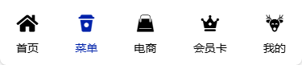
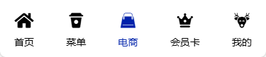
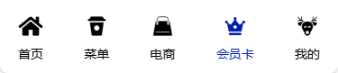
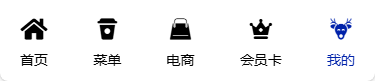
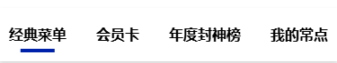
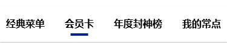
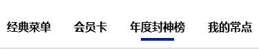
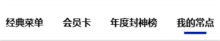

全局设置路由样式
. 指定样式 - .router-link-active .router-link-exact-active
. 指定类 - activeClass、exactActiveClass
. 配置路由样式类 - linkActiveClass、linkExactActiveClass
单独设置路由样式
分别使用上述方法实现主导航

当前活动路由

当前活动路由

当前活动路由

当前活动路由

当前活动路由
封装为组件，定义 Props 属性
const tabs = [
{ ind: 0, title: '经典菜单', path: '/menu', keyword: 'classic' },
{ ind: 1, title: '会员卡', path: '/menu/vip', keyword: 'member' },
{ ind: 2, title: '年度封神榜', path: '/menu/rank', keyword: 'rank' },
{ ind: 3, title: '我的常点', path: '/menu/favorite', keyword: 'favor' },
]
<button v-for="(item, ind) in tabs" :key="ind" class="tab-item" @click.stop="navToItem(item)"
:class="{ active: currentInd === ind }">
<h3>{{ item.title }}</h3>
</button>
.tab-item {
position: relative;
}
.tab-item.active::after {
content: '';
position: absolute;
left: 50%;
bottom: 0;
transform: translateX(-50%);
width: 60%;
height: 4px;
background-color: var(--main-color);
}

当前活动路由

当前活动路由

当前活动路由

当前活动路由